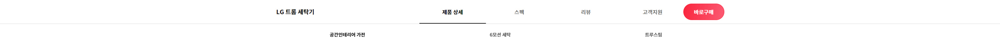

세탁 과학의 완성,
LG 트롬만의 인공지능 세탁
뉴 디자인
미니멀에서 시작되는 진정한 편리미엄
퀵서클 컨트롤
돌리면 끝나는 세상 편한 세탁
세탁이 쉬워지려면 조작부터 간편해야죠. 그래서 필요한 모든 기능을 심플한 다이얼 하나에 담았습니다. 보기 쉬운 UI로 쓰는 법도 간단하죠. 1
글라스 도어
밖에서 보면 우아하고 안에서 보면 든든합니다.
고강도 유리 소재라 스크래치에도 아주 강력하죠.
인공지능 맞춤 세탁
급이 다른 기술로 격이 다른 세탁클래스
인공지능 DD모터 x 6모션
그 무엇보다 옷을 배려합니다
하는 일이 다르고, 입는 옷이 달라도 걱정 마세요.
옷감의 무게와 종류, 오염도까지 인공지능 DD모터가 알아서 인식하니까요. 여기에 6모션이 최적의 코스를 맞춰주니까 손으로 직접 빤 듯 섬세한 세탁이 가능하죠.
인공지능 스마트 센서
세탁 초보도
걱정 잊게 만드는 세심함
이제 아이 옷, 어른 옷 구분 없이 한 번에 안심 세탁하세요.
초정밀 센서와 인공지능 DD모터가 세탁물에 따라 세제량, 헹굼 횟수를 알아서 척척 조절해 혹시 모를 잔여 세제까지 말끔하게 제거해줍니다.


인공지능 스마트 케어
우리 가족 일거수일투족 맞춤 케어
오늘은 어떤 옷을 입었는지, 오늘 날씨는 어땠는지 트롬이 당신의 하루를 빠르게 학습하여 최적의 코스를 추천합니다. 평소 세탁 습관도 똑똑하게 기억하니까 복잡한 설정 없이 시작 버튼만 누르세요. 주석2
스마트 페어링
세탁기와 건조기를 넘어
이제 스타일러까지
세탁 천재 트롬답게 기기 간의 정보 공유도 똑소리 납니다.
세탁 중인 빨래 정보를 건조기가 그대로 이어받고 특별 케어가 필요한 의류는 스타일러에 바로 공유되죠. 주석3
영상 or 이미지
건강한 세탁 생활
세탁의 기준을 새롭게 바꾸다
초강력 5방향 터보샷+
세탁은 빠르게, 환경은 바르게
상하좌우 5방향에서 뿜어내는 초강력 터보샷은 세탁 시간을 획기적으로 줄여줍니다. 5개의 물살이 코스에 따라 세기와 방향을 자동으로 조절해 옷감은 똑똑하게 보호하고, 시간은 최대 30분까지 절약해주죠. 여기에 물 사용량도 30% 확 줄여 환경에도 유익합니다. 주석4
영상 or 이미지
특허받은 100℃ 트루스팀
유해 세균 99.99% 완전 박멸
새로워진 트롬은 살균 능력도 가히 압도적입니다.
일반 물 입자보다 1600배 작은 100℃ 고온 스팀이 옷감 구석구석 침투하여 미세 세균, 바이러스, 냄새 입자까지 완벽한 수준으로 제거해주죠. 물론 찌든 때, 얼룩 제거 같은 세탁 본연의 능력도 환상적입니다. 주석5
영상 or 이미지
스테인리스 세탁통
오래도록 한결같은 위생 능력
우리 가족 옷을 책임지는 세탁기니까 철저한 위생은 기본이죠.
그래서 세탁통은 물론 옷감이 닿는 부분까지 녹과 부식에 강한 스테인리스 소재를 적용했습니다. 통살균 코스를 활용하면 세탁통 내부 청소와 세균 살균까지 청결하게 관리해주죠. 주석6
영상 or 이미지
24kg 대용량 세탁
거대한 용량의 위대한 역량
당신의 할 일을 조금이나마 줄이고자 용량을 최대로 키웠습니다.
덕분에 평일 내내 쌓인 빨래도 주말 하루면 충분히 해결할 수 있죠. 주석7
영상 or 이미지
LG ThinQ 앱
어디서든 무엇이든 바로바로
당신이 들어오기 전에 알아서 세탁을 마치고, 궁금한 내용은 빠르게 체크하고, 원하는 대로 다 됐으면 즉시 알려주는 LG ThinQ로 스마트한 세탁 생활을 누려보세요. 주석8
영상 or 이미지
-
- 원격제어
- 언제 어디서나 스마트폰 하나로 작동부터 실시간 모니터링까지 빠르게 할 수 있습니다.
-
- 다운로드 코스
- 우리집에 맞는 새로운 세탁 코스를 간편하게 찾아 다운로드 받을 수 있습니다. 주석9
-
- 에너지 모니터링
- 최근 사용 코스, 월별 에너지 사용량 등을 미리 체크하여 전기료를 아낄 수 있습니다.
-
- 통살균 코치
- 통살균 기능 사용 방법부터 사용 주기까지 한눈에 체크할 수 있습니다. 주석10
-
- 스마트 진단(Wi-Fi)
- 발생한 문제를 빠르게 체크하고, 필요할 땐 고객센터로 바로 연결할 수 있습니다.
영상 or 이미지
LG 트롬 트윈워시를 선택해야 하는 이유
소비자 만족 1등 트롬과 미니워시가 만나 동시세탁은 기본, 삶음/탈수까지 동시에, 세탁실 공간은 넓게, 기능은 두 배로 사용해보세요.
-
1.글라스도어
- 글라스도어 내구성 : Intertek 실험결과, 자사의 기존 플라스틱 도어 비커스 경도12.2Hv, 글라스도어 575.66Hv로 수치가 높을 수록 안티스크래치 성능 강함.
- 글라스도어 모스 경도계 환산 시 5.5~6.5 사이
-
2.스마트 케어
- 기능사용 전에 반드시 LG ThinQ 앱을 통해 제품등록 해야함.
- LG ThinQ 앱의 AccuWeather의 날씨 정보 활용함.
-
3.스마트 페어링
- 스마트 페어링 기능은 Wi-Fi 연결 및 LG ThinQ 앱에 제품 등록 후 사용할 수 있으며, Wi-Fi가 탑재된 LG 세탁기(드럼/통돌이)와 모두 페어링 가능합니다.
- 스마트 페어링 기능 (건조기) 는 일부 모델에 한함.
-
4.5방향 터보샷
- 5방향 터보샷이란? 좌우 4개의 분사 물살과 1개의 낙수 물살의 다양한 작용으로, 수압에 따라 물줄기의 분사 세기, 모양이 달라질 수 있고, 실 사용 환경과 행정 과정에 따라 터보샷 작동은 상이할 수 있습니다.
- 인터텍(Intertek)시험 결과, 자사가 제시한 기준으로 북미 에너지 규격 시험 부하 3kg, 표준 코스+터보샷 옵션 세탁 시 30분. 표준코스+터보샷 옵션 미적용 대비 물사용양 30%, 세탁시간 24%가 절약되었습니다.
- 세탁시간과 물사용량은 사용 환경에 따라 차이가 있을 수 있습니다.
-
5.트루스팀
- 전남대학교 산학협력단 시험 결과, 인플루엔자(H3N2), 인플루엔자(H1N1), 엔테로(PEV), 아데노(ICHV), 헤르페스(IBRV), 아데노(ICHV), 코로나(MHV), 코로나(PEDV) 바이러스를 30cm x 30cm KS포에 접종한 후 정격용량 50%와 함께 투입하여 알러지케어 코스 행정 시 99.99% 제거함.
- PEDV와 MHV 바이러스는 코로나 바이러스의 일종으로 신종 코로나바이러스 19(COVID-19)에 대한 시험 결과가 아님.
- 상기 제거율은 실사용 조건에 따라 차이가 있을 수 있습니다.
- 영국 알러지 협회(BAF) 집먼지진드기, 개, 고양이, 꽃가루 알러젠 제거인증(알러지 케어코스_트루스팀 적용 기준)
- 한국의과학연구원(KRIBS) 시험 결과, 시험편 표면에 유해세균(황색포도상구균, 녹농균, 폐렴간균)을 접종 후 국제 에너지 규격 시험 50% 부하와 함께 알러지케어 코스 행정 시 99.99% 살균됨.
- 살균 효과는 세균의 종류, 사용환경 등에 따라 차이가 있을 수 있습니다.
- 국내최다 : 2020년 11월 국내판매 드럼세탁기 홈페이지 시험치 명시 기준 (자사 14종=유해세균 3종+바이러스 7종+유해물질4종)
-
6.스테인리스 세탁통
- 스테인리스 재질 위생성 : 인터텍 시험 결과, 녹농균을 10cm x 10cm 크기의 시편에 접종한 후 최대 12일 간 배양 시 초기조건 대비 STS 재질에서 항균력 99%임.
- 항균효과는 사용 환경에 따라 차이가 있을 수 있습니다.
-
7.대용량
- 국내 판매중인 전기식 가정용 세탁기 기준(20년 4월 판매 기준)
-
8.LG ThinQ
- 해당 기능 사용을 위해서는 스마트폰의 Google Play 스토어 또는 Apple App 스토어에서 'LG ThinQ' 앱을 설치하여 Wi-Fi에 연결해야 합니다. 자세한 사용 방법은 애플리케이션의 도움말을 참고해 주세요.
- LG ThinQ 앱은 일부 스마트폰에서는 기능 사용에 제약이 발생하거나 작동하지 않을 수 있으니, 최소 사양을 확인 후 사용하세요. (Android OS 5.0 이상, iOS 10.0 이상)
-
9.다운로드 코스
- 모델마다 다운로드코스는 상이할 수 있습니다.
- 다운로드 코스는 한 개 코스만 저장 가능하며, LG ThinQ 앱을 통해 코스를 변경할 수 있습니다.
-
10.통샬균
- 인터텍 시험 결과, 자사가 제시한 기준으로 내외통 각 3곳에 균을 배양한 미생물을 바른 후, 통살균 코스 시 황색포도상구균, 녹농균, 폐렴간균 99.9% 제거됨.
- 살균 효과는 사용 환경에 따라 차이가 있을 수 있습니다.